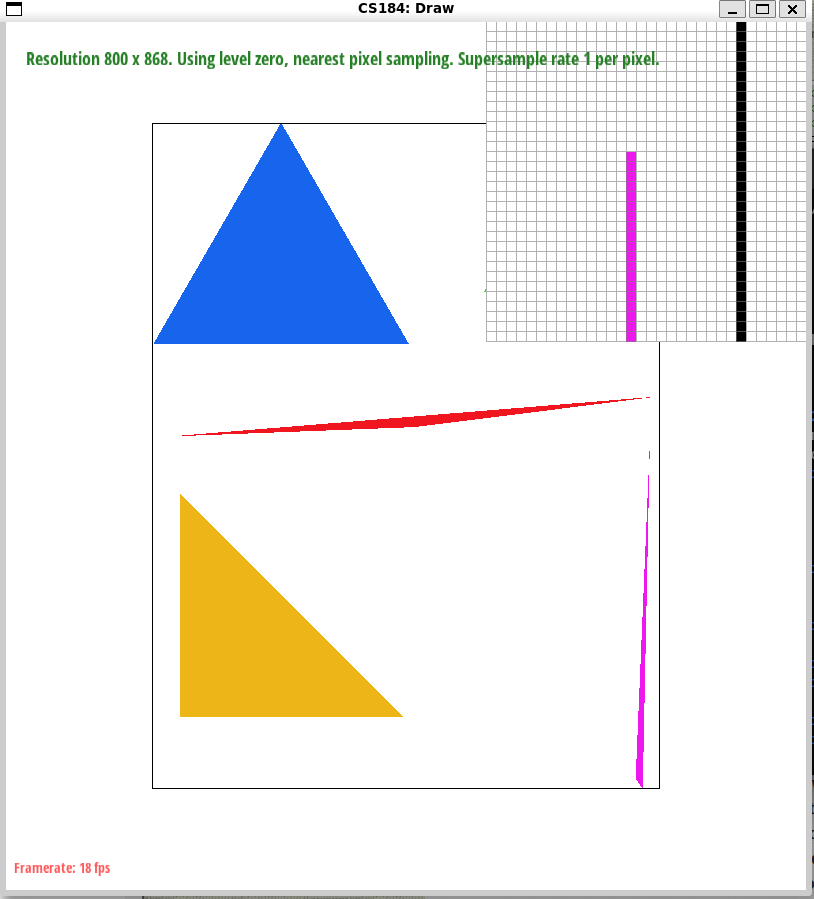
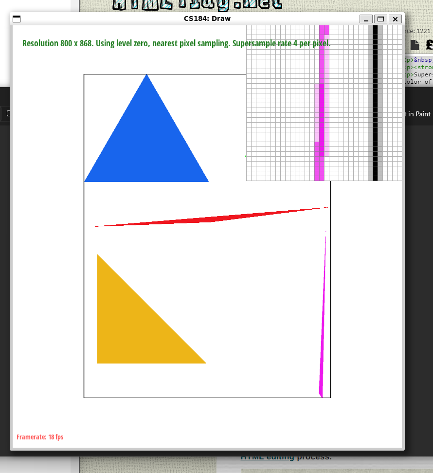
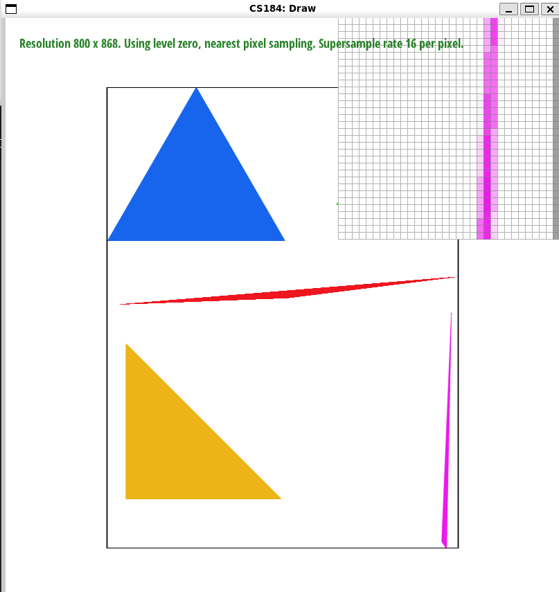
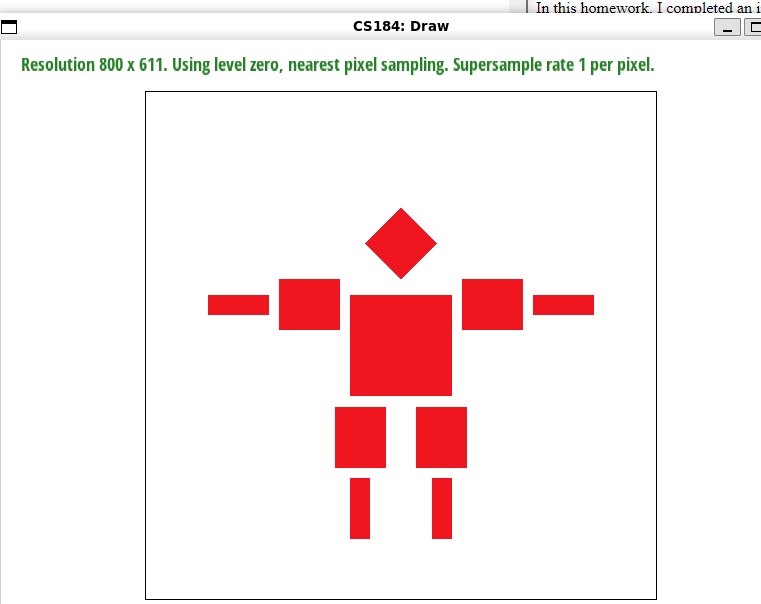
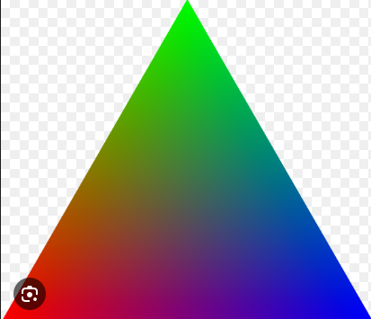
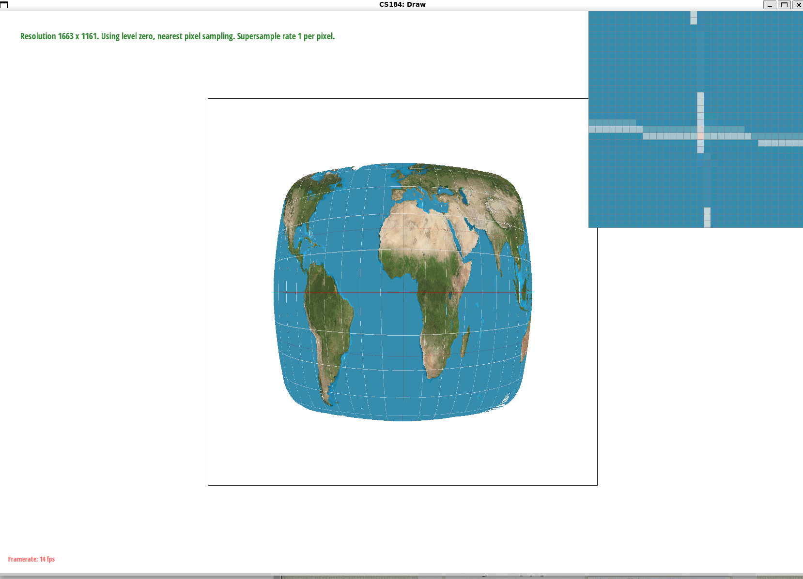
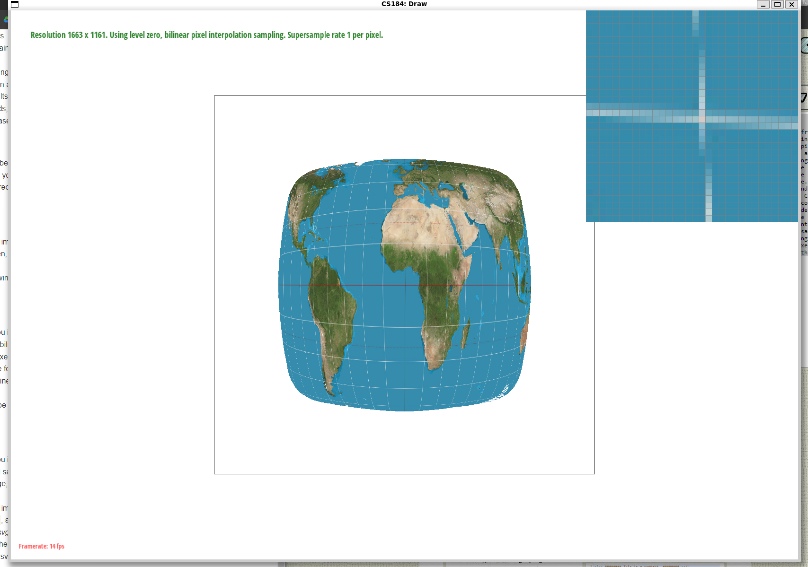
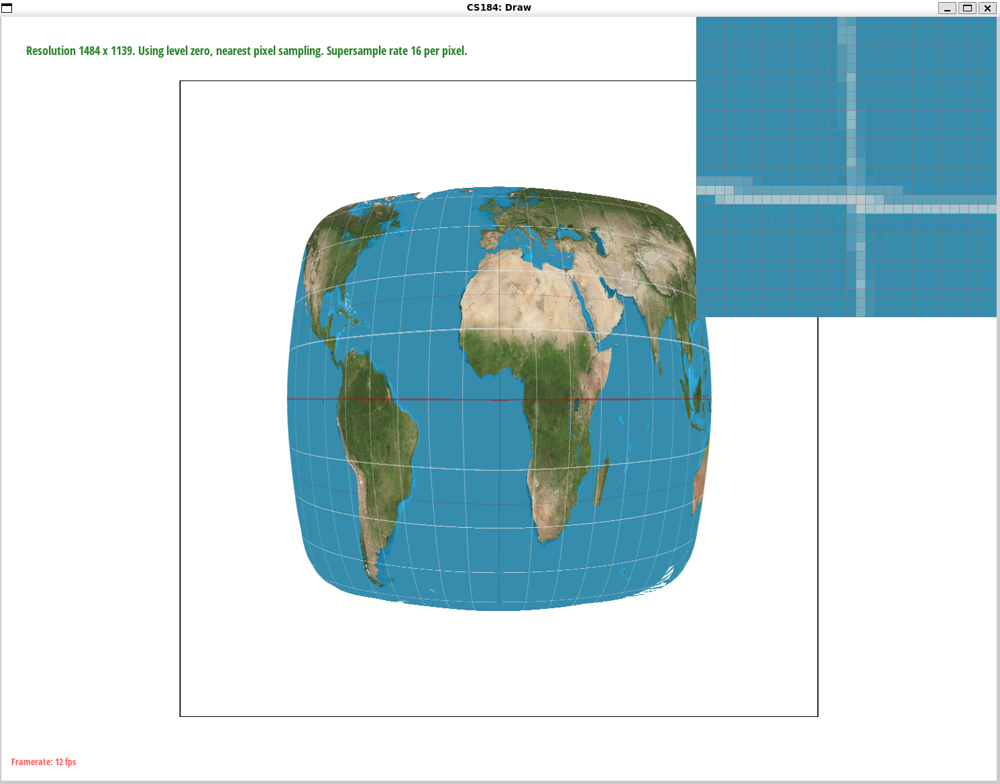
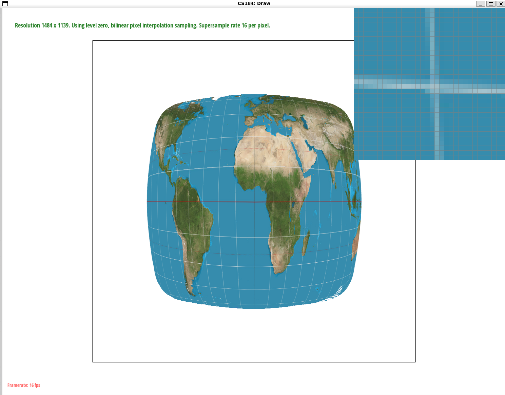

Overview
In this homework, I completed an implementation of a basic rasterizer that's able to draw triangles of a single color or interpolated colors, supersample, hierarchical transforms, and texture map with a couple antialiasing techniques. The most interesting part of the homework for me was realizing first-hand how much computation goes into calculating a single pixel. From checking the orientation of triangles by calculating the cross product to weighting samples of different mipmap levels, it was pretty cool to see the behind-the-scenes effort of computed imaging, which I've always taken for granted.
Task 1
Given a triangle defined by three vertices, we rasterize it by checking to see which points in our 2D screen space (which eventually maps to pixels on the screen) are contained within the bounds of the triangle; if so, we color that point according to the color of the triangle.
As an optimization, I only checked points within the bounding box of the triangle. Specifically, we know that there are no points on our 2D plane that will exist the triangle below the minimum x or y coordinates or above the maximum x or y coordinates of any of triangle's vertices; therefore, we only need to check points above the minimum x or y coordinates or below the maximum x or y coordinates.
Task 2
Supersampling is useful because it enhances image quality by computing the color of a pixel based on not one sample, but an average of the samples around it as well. As a result, antialiasing traingles by blurring away artifacts such as jagged edges.
To do this, I did a few things. First, I utilized the sample buffer to 'virtually' sample pixels at a higher rate, and I averaged those samples down when I output to the actual frame buffer. To do this, I adjusted the sample buffer to scale in size along with scaling the space between sample points to rasterize relative to the sampling ratge. Since every pixel in the real buffer corresponded to sample_rate-numbered amount of pixels in the sample buffer, every sample_rate amount of colors in our sample buffer was averaged to one color in the real buffer.
To implement supersampling for lines and points, I simply just assigned every point in the sample buffer that corresponded to a single real buffer point to its color. Thus, lines would get thicker and dots larger after supersampling, which is expected behavior since it's a smaller rate of change of frequency.
As you can observe in the images, you can easily notice how the sharp and thin edge of the pink triangle gets diffused over the white space as the sampling rate increases; this happens because we're averaging the colors over a large 'virtual' sampling space so it bleeds out more. This is also consistent with our understanding of frequencies since sampling more = filters out higher frequencies = a more blurred and diffused image.
  
Task 3
I made my robot go to the gym and made him do leg presses, curls, and dips only. As a result, I increased the scale of his thighs and arms.

Task 4
Barycentric coordinates offer a mathematical method to express the location of any point within a triangle relative to the triangle's vertices. Imagine a triangle as a piece of flexible, yet non-stretchable, cloth. You can place a pin anywhere on this cloth. Barycentric coordinates tell you how to create a unique blend of the triangle's three corner points (vertices) to exactly match the pin's position.
Each vertex is assigned a weight that determines how much influence it has on the final position. These weights are the barycentric coordinates. The beauty of these coordinates is that they allow for easy calculation and interpolation of values across the triangle. For example, if you had colors at each vertex, barycentric coordinates could help you smoothly blend these colors across the entire triangle.

Task 5
Pixel sampling is how we figure out how to map colors from a texture onto rasterized triangles that get drawn to the screen. The main challenge when doing this is to determine the most accurate color for a pixel, especially if the texture's resolution and size don't match the display area!
First, similarly to how we rasterized our regular triangles, we needed to check for inverse-oriented triangles mapped on the texture space by finding the cross-product. We now have two triangles: our triangle in our display space, and the corresponding triangle in the texture space. Since every point in a triangle can be uniqely identified by alpha, beta, and gamma, we can use those values that we figured out from Task 4 (Barycentric Coordinates) to figure out, for any point on our 'display' triangle, its corresponding point in the texture map. However, since these coordinates are decimals between 0 and 1, we then need to scale them to match the size of the texture map. After that, we sample that point in the texture map. We implemented this in two ways: nearest sampling and bilinear sampling. In nearest sampling, we simply calculated the nearest point on the texture map by rounding the coordinates. With bilinear sampling, we identified the four nearest pixels to the point, and computed a weighted average of their colors based on their proximity to the original point.
Observing the images below, you can notice how there are noticeable difference between bilinear sampling and nearest neighbor at both 1 and 16 sampling rates. Nearest sampling tends to preserve the original texture's sharpness since it doesn't average any color values, but can lead to a pixelated or blocky appearance. On the other hand, bilinear sampling creates a smoother transition between texels since it averages color values, reducing the blocky appearance and better preserving gradients and fine details. Detailed textures can be an example where the differences are the most pronounced; nearest neighbor will be able to capture the high frequency nuances of an image, whereas bilinear might lose detail due to visual noise and blur.
   
Task 6
Level sampling helps us improve the visual quality of 3D textures! The main idea is to use different resolutions of the same texture that vary based on how far the object that is being textured is supposed to look to a viewer. This helps us reduce aliasing and improve performance (since we don't have to render every texture at high resolution).
To implement this, I had to do a bunch of stuff.
First, not only do we need to identify the original (u, v) coordinates through scaling the barycentric coordinates of the original (x, y) sample, but we need to do this for (x + 1, y), and (x, y + 1). Of course, like before, we scale these coordinates to match the size of the texture map. This is because we use these values to calculate the distance of the current triangle by calculating how far the points are on the texture map using the equation in class.; all screen sample points are of equal distance, but can be of varying distance depending on the texture map (points being farther apart = farther to the viewer). This distance allows us to choose the appropriate mipmap level ~ the closer the points on the texture, the lower the mipmap level, and therefore the lower the resolution of the applied texture. Sometimes, though, the mipmap level can be too high (if the points are too close) or too low vice-versa. Therefore, I clamp the values of the mipmap to be strictly between 0 and the total number of mipmaps (minus one). When sampling between the mipmaps, we had three options. You could just sample from the first mipmap and not any of the lower resolution ones. You could same from the nearest mipmap, where the mipmap sampled is just the level value rounded. Or you could linearly sample the mipmap, where the output color is a weighted average between two adjacent mipmaps. Help. I'm so tired, I might pass out. But we push on.
Okay. Tradeoffs for pixel sampling: Nearest vs Bilinear. Nearest is faster, since it accesses only one mipmap and also doesn't require more compute. Both use the same amount of memory (I mean technically bilinear holds more cache memory for the extra texels needed for interpolation). Nearest doesn't provide antialiasing power since it doesn't reduce any frequencies, while bilinear smooths stuff out.
Okay. Tradeoffs for level sampling. Mipmapping improves rendering speed. Why? Because only the closest objects are rendered at high resolution. Sampling high resolution textures takes time. It does have an additional overhead though of creating the mipmaps, but it seems marginal. Mipmapping increases memory usage since it stores multiple versions of each texture. Mipmapping also antialiases stuff caused by texture minification; by selecting the right level, mipmapping can prevent high frequency texture details.
Okay. Tradeoffs for supersampling. Is quite slow; increasing the number of samplles linearly increases computing speed. More samples to compute = slower. Supersampling also requires linearly more memory for the sampling buffer. More samples to store = more memory. Supersampling is one of the best ways to antialiase things since it averages multiple samples, which reduces stuff like jagged edges and other artifacts.